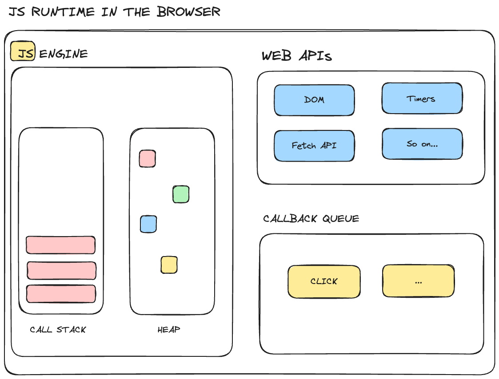

Web Development
Standard web technologies include three levels:
- HTML - defines the structure of a web page
- CSS - Cascading Style Sheets
- JavaScript - Dynamic client-side scripting
These technologies are ubiquitous across the web. Every web browser has a JavaScript interpreter built into it and many have JIT compilers to optimize the code as it runs.
Hyper Text Markup Language
HTML is a markup language, similar to XML that describes the structure and layout of a web page.
A browser represents an HTML document using a DOM(Domain Object Model) which is structured as a tree of nodes (a DOM tree), where each node defines part of the document, usually an element.
<!doctype html>
<!-- Each element starts with a tag, and may include space separated attributes.
The content of the element is between the start and close tags. -->
<html lang="en-US">
<!-- the head contains metadata that is not displayed -->
<head>
<!-- a void element has no content, and therefore no separate closing tag -->
<meta charset="utf-8" />
<title>My test page</title>
</head>
<!-- the body describes the layout/content of the page -->
<body>
<p>This is my page</p>
</body>
<!-- closing tag for the html element -->
</html>
A good resource for learning HTML
Cascading Style Sheets
CSS is a stylesheet language used to describe the presentation or rendering of a document written in HTML or XML (including SVG and MathML).
<!DOCTYPE html>
<html>
<head>
<style>
/* The <selector> is the HTML element tag. Note declarations are name':'value */
body {
background-color: lightblue;
}
h1 {
color: white;
text-align: center;
}
/* The period (.) begins a class selector */
.p1 {
font-family: Arial, Helvetica, sans-serif;
}
.p2 {
font-family: "Lucida Console", "Courier New", monospace;
}
</style>
</head>
<body>
<h1>CSS font-family</h1>
<p class="p1">This is a paragraph, shown in the Arial font.</p>
<p class="p2">This is a paragraph, shown in the Lucida Console font.</p>
<!-- css can be in-line or in an external file, as well -->
<p style="font-size:30px">Much larger</p>
</body>
</html>
A good resource for learning CSS
JavaScript
All web browsers contain a JavaScript execution environment to run scripts that program the dynamic behavior of web pages. Example behaviors are accepting user input or recognizing a button press.
<!DOCTYPE html>
<html>
<body>
<h2>What Can JavaScript Do?</h2>
<p>JavaScript can change HTML attribute values.</p>
<p>In this case JavaScript changes the value of the src (source) attribute of an image.</p>
<button onclick="document.getElementById('myImage').src='pic_bulbon.gif'">Turn on the light</button>
<img id="myImage" src="pic_bulboff.gif" style="width:100px">
<button onclick="document.getElementById('myImage').src='pic_bulboff.gif'">Turn off the light</button>
</body>
</html>
Try it here
In this example, button is an HTML element, and onclick is the Javascript
code that is called when the button is pressed.
The callback code accesses the element with id="myImage" and changes the src
field of the struct.
Web APIs
The browser runtime environments are sandboxed, which means the scripts access to the host environment is carefully controlled. However, the scripts do have access to the Web APIs in the runtime environment, and this is how all the work gets done.
From: [https://www.freecodecamp.org/news/javascript-engine-and-runtime-explained/]
Exploring Web APIs
Let's explore the canvas and img elements.
<!DOCTYPE html>
<html>
<body>
<canvas id="myCanvas" width="400" height="200" style="border:1px solid #000000;">
Your browser does not support the HTML canvas tag.
</canvas>
<script>
var canvas = document.getElementById("myCanvas");
var context = canvas.getContext("2d");
context.fillStyle = "blue";
context.strokeRect(10, 10, canvas.width-10, canvas.height-10);
canvas.addEventListener('click', clickReporter, false);
function clickReporter(event) {
const rect = canvas.getBoundingClientRect()
const x = event.clientX - rect.left
const y = event.clientY - rect.top
console.log("x: " + x + " y: " + y)
}
canvas.addEventListener('click', clickReporter, false);
</script>
</body>
</html>
The canvas looks like it could be useful. Let's try to load some images:
<!DOCTYPE html>
<html>
<body>
<script>
var CardNames = ['images/ace_of_clubs.png',
'images/6_of_clubs.png',
'images/jack_of_clubs.png',
'images/king_of_clubs.png'
];
CardNames.forEach(function(path) {
var img = document.createElement('img');
img.src = path;
img.alt = path;
document.body.appendChild(img);
});
</script>
</body>
</html>
Hmm, the cards look good, but they're too big. Let's try to scale them down.
function resizeImage(image, maxSize) {
var icanvas = document.createElement('canvas');
var width = image.width;
var height = image.height;
// Calculate the new dimensions, maintaining the aspect ratio
if (height > width) {
width *= maxSize / height;
height = maxSize;
}
else {
height *= maxSize / width;
width = maxSize;
}
// Set the canvas dimensions to the new dimensions
icanvas.width = width;
icanvas.height = height;
// Draw the resized image on the canvas
var ctx = icanvas.getContext('2d');
ctx.drawImage(image, 0, 0, width, height);
ctx.fillStyle = "black";
ctx.strokeRect(0, 0, width-1, height-1);
document.body.appendChild(icanvas);
}
Let's put the canvas and the image together:
var canvas;
var context;
var Cards = new Array();
var next = 0;
function getCursorPosition(event) {
const rect = canvas.getBoundingClientRect();
const x = event.clientX - rect.left;
const y = event.clientY - rect.top;
console.log("x: " + x + " y: " + y + " next: " + next);
context.drawImage(Cards[next], x, y);
next = next + 1;
if (next >= 4) {
next = 0;
}
}
Web Servers
Most web browsers get the content they display from servers:

The communication is almost universally done using HTTP, which is a message based client-server protocol.
HTTP Messages
Although HTTP is not connection based, it is typically used on TCP, which has convenient reliability guarantees. Originally, HTTP/1.0 opened a separate connection for every request/response pair. This turned out to be very slow because it takes several round-trips to establish a connection. HTTP/2 multiplexes many messages over a single TCP connection.

There are only a few request methods or verbs:
- GET/HEAD
- - requests data from the server. HEAD asks for the metadata only.
- POST
- - sends data to the server. PUT seems to be similar.
- DELETE
- - removes a resource from the server.
- PATCH
- - partial modifications to a resource at the server.
HTTP is extensible and flexible, and has lots of support packages for both client and server implementations.
Rocket
Rocket is an async web framework for Rust.
#![allow(unused)] fn main() { #[macro_use] extern crate rocket; #[cfg(test)] mod tests; #[derive(FromFormField)] enum Lang { #[field(value = "en")] English, #[field(value = "ru")] #[field(value = "ру")] Russian } #[derive(FromForm)] struct Options<'r> { emoji: bool, name: Option<&'r str>, } // Try visiting: // http://127.0.0.1:8000/hello/world #[get("/world")] fn world() -> &'static str { "Hello, world!" } // Try visiting: // http://127.0.0.1:8000/hello/мир #[get("/мир")] fn mir() -> &'static str { "Привет, мир!" } // Try visiting: // http://127.0.0.1:8000/wave/Rocketeer/100 #[get("/<name>/<age>", rank = 2)] fn wave(name: &str, age: u8) -> String { format!("👋 Hello, {} year old named {}!", age, name) } // Note: without the `..` in `opt..`, we'd need to pass `opt.emoji`, `opt.name`. // // Try visiting: // http://127.0.0.1:8000/?emoji // http://127.0.0.1:8000/?name=Rocketeer // http://127.0.0.1:8000/?lang=ру // http://127.0.0.1:8000/?lang=ру&emoji // http://127.0.0.1:8000/?emoji&lang=en // http://127.0.0.1:8000/?name=Rocketeer&lang=en // http://127.0.0.1:8000/?emoji&name=Rocketeer // http://127.0.0.1:8000/?name=Rocketeer&lang=en&emoji // http://127.0.0.1:8000/?lang=ru&emoji&name=Rocketeer #[get("/?<lang>&<opt..>")] fn hello(lang: Option<Lang>, opt: Options<'_>) -> String { let mut greeting = String::new(); if opt.emoji { greeting.push_str("👋 "); } match lang { Some(Lang::Russian) => greeting.push_str("Привет"), Some(Lang::English) => greeting.push_str("Hello"), None => greeting.push_str("Hi"), } if let Some(name) = opt.name { greeting.push_str(", "); greeting.push_str(name); } greeting.push('!'); greeting } #[launch] fn rocket() -> _ { rocket::build() .mount("/", routes![hello]) .mount("/hello", routes![world, mir]) .mount("/wave", routes![wave]) } }
#![allow(unused)] fn main() { #[launch] fn rocket() -> _ { rocket::build() .mount("/", routes![hello]) .mount("/hello", routes![world, mir]) .mount("/wave", routes![wave]) } }
What is WebAssembly
WebAssembly is a binary instruction format for a stack-based virtual machine. WASM is designed as a portable compilation target for programming languages, enabling deployment on the web for client and server applications.
Supported browsers:
- Mozilla's Firefox
- Google Chrome
- Apple Safari
- Microsoft Edge
Supported Languages:
- C/C++/C#
- Rust
- Go, F#, Zig, Kotlin
- Swift
Key Concepts
Module - represents the binary that has been compiled by the browser into executable machine code. A Module is stateless, so it can be shared between windows and workers. A module also declares its imports and exports.
Memory - a resizable ArrayBuffer that is accessible from both WASM and JavaScript. Both WebAssembly and Javascript can create new Memory objects, and pass the reference from one side to the other.
Table - a resizable array of references that can be accessed from both WASM and JavaScript. The table is a JavaScript wrapper object that holds function references.
Instance - a stateful, executable instance of a Module. The Instance includes the Memory, Table, and imported values.
JavaScript has control of how a WebAssembly Module is loaded, instantiated, and used or integrated. In addition, JavaScript's garbage collected heap, containing its Objects and DOM nodes, is not accessible from WebAssembly. All communication between the high level language and Javascript is through the linear Memory space.
WebAssembly new and cool features:
- SIMD - vector ops available
- native threads
WebAssembly Text Format
Although one of WASM's features is its size and load-time efficient binary format, it also has a text representation that can be useful for debugging.
In both binary and text formats, WebAssembly is represented by S-expressions. S-exprs are an old and simple format for representing trees.
The root of a WebAssembly tree is a module. The module below has a func
node and an export node:
(module
(func $add (param $lhs i32) (param $rhs i32) (result i32)
local.get $lhs
local.get $rhs
i32.add)
(export "add" (func $add))
)
Each supported language has a tool chain for compiling text to binary.
For C/C++ the tool is called emscripten, and for
text the tool is called wat2wasm and comes from WABT.
WebAssembly is noy yet integrated with HTML <script type='module'> or
Javascript import statements, so you have to create an ArrayBuffer to load
the raw bytes and then compile/intantiate the program.
WebAssembly.instantiateStreaming(fetch("myModule.wasm"), importObject).then(
(obj) => {
// Call an exported function:
obj.instance.exports.exported_func();
// or access the buffer contents of an exported memory:
const i32 = new Uint32Array(obj.instance.exports.memory.buffer);
// or access the elements of an exported table:
const table = obj.instance.exports.table;
console.log(table.get(0)());
},
);
Rust and WebAssembly
WebAssembly was not designed to replace JavaScript, but rather to augment it.
- Size matters because the code must be downloaded over the network.
- Rust has no runtime and highly optimized, and WASM's binary format is compact
- Mixed/hybrid environments are fine, so existing products can be incrementally improved
- You can target the performance sensitive sections
Rust (or C++) vs JavaScript
- Memory Management: JavaScript uses behind the scenes garbage collection while Rust takes a manual ownership/scope based approach. Rust's fine-grained heavily checked memory management can have both space and time benefits.
- Concurrency: Both Rust and Javascript have async support. Javascript tends to use the event loop model to manage concurrent tasks, while Rust uses its borrowing and ownership model to make concurrency safe.
- Type System: Javascript is dynamically typed while Rust is statically typed. JavaScript programs are usually compatible with TypeScript programs to allow some strong typing.
- Error Handling: JavaScript uses exceptions while Rust favors the
ResultandOptionenums to encourage handling errors at compile time. - Performance: JavaScript uses JIT to optimize heavily used code at runtime, while Rust uses static offline analysis to optimize its code.
(from https://stackshare.io/stackups/javascript-vs-rust)
Design Considerations
Often we'll use Rust to do expensive computations and JavaScript to display the results, with WebAssembly as the bridge between them. To preserve the potential performance benefits of this architecture:
- Minimize copying across the WebAssembly linear Memory boundary. Unnecessary copies impose unnecessary overhead.
- Minimize serializing and deserializing. Another form of copying to avoid. We prefer to work with opaque handles to JavaScript Objects or boxed Rust structures.
wasm-pack
wasm-pack contains utilities to help generate WebAssembly from Rust.
For example, we can import JavaScript funtions and export Rust functions:
#![allow(unused)] fn main() { use wasm_bindgen::prelude::*; #[wasm_bindgen] extern { pub fn alert(s: &str); } #[wasm_bindgen] pub fn greet(name: &str) { alert(&format!("Hello, {}!", name)); } }
This could be called from JavaScript:
<!doctype html>
<html lang="en-US">
<head>
<meta charset="utf-8" />
<title>hello-wasm example</title>
</head>
<body>
<script type="module">
import init, { greet } from "./pkg/hello_wasm.js";
init().then(() => {
greet("ECE 421");
});
</script>
</body>
</html>
To build
wasm-pack build --target web
To run, serve the root directory with a local web server:
python3 -m http.server
and open the page at http://localhost:8000
Simple Game of Life
In this example we'll show how html, JavScript, WebAssembly, and Rust all work together.
In this simple version, we'll just render the universe into a preformatted area of the screen
<body>
<pre id="game-of-life-canvas"></pre>
<script src="./bootstrap.js"></script>
</body>
The JavaScript creates the Rust Universe and starts the renderLoop, which
gets a callback every tick to update the screen.
import { Universe } from "wasm-game-of-life";
const pre = document.getElementById("game-of-life-canvas");
const universe = Universe.new();
const renderLoop = () => {
pre.textContent = universe.render(); // copy the new Universe into the textbox
universe.tick(); // move the universe ahead by one step
requestAnimationFrame(renderLoop);
};
requestAnimationFrame(renderLoop);
The Rust Universe is an array of cells:
#![allow(unused)] fn main() { mod utils; use wasm_bindgen::prelude::*; #[wasm_bindgen] #[repr(u8)] #[derive(Clone, Copy, Debug, PartialEq, Eq)] pub enum Cell { Dead = 0, Alive = 1, } #[wasm_bindgen] pub struct Universe { width: u32, height: u32, cells: Vec<Cell>, } impl Universe { fn get_index(&self, row: u32, column: u32) -> usize { (row * self.width + column) as usize } fn live_neighbor_count(&self, row: u32, column: u32) -> u8 { let mut count = 0; for delta_row in [self.height - 1, 0, 1].iter().cloned() { for delta_col in [self.width - 1, 0, 1].iter().cloned() { if delta_row == 0 && delta_col == 0 { continue; } let neighbor_row = (row + delta_row) % self.height; let neighbor_col = (column + delta_col) % self.width; let idx = self.get_index(neighbor_row, neighbor_col); count += self.cells[idx] as u8; } } count } } /// Public methods, exported to JavaScript. #[wasm_bindgen] impl Universe { pub fn tick(&mut self) { let mut next = self.cells.clone(); for row in 0..self.height { for col in 0..self.width { let idx = self.get_index(row, col); let cell = self.cells[idx]; let live_neighbors = self.live_neighbor_count(row, col); let next_cell = match (cell, live_neighbors) { // Rule 1: Any live cell with fewer than two live neighbours // dies, as if caused by underpopulation. (Cell::Alive, x) if x < 2 => Cell::Dead, // Rule 2: Any live cell with two or three live neighbours // lives on to the next generation. (Cell::Alive, 2) | (Cell::Alive, 3) => Cell::Alive, // Rule 3: Any live cell with more than three live // neighbours dies, as if by overpopulation. (Cell::Alive, x) if x > 3 => Cell::Dead, // Rule 4: Any dead cell with exactly three live neighbours // becomes a live cell, as if by reproduction. (Cell::Dead, 3) => Cell::Alive, // All other cells remain in the same state. (otherwise, _) => otherwise, }; next[idx] = next_cell; } } self.cells = next; } pub fn new() -> Universe { let width = 64; let height = 64; let cells = (0..width * height) .map(|i| { if i % 2 == 0 || i % 7 == 0 { Cell::Alive } else { Cell::Dead } }) .collect(); Universe { width, height, cells, } } pub fn render(&self) -> String { self.to_string() } } use std::fmt; impl fmt::Display for Universe { fn fmt(&self, f: &mut fmt::Formatter) -> fmt::Result { for line in self.cells.as_slice().chunks(self.width as usize) { for &cell in line { let symbol = if cell == Cell::Dead { '◻' } else { '◼' }; write!(f, "{}", symbol)?; } write!(f, "\n")?; } Ok(()) } } }
To create and render the universe:
#![allow(unused)] fn main() { mod utils; use wasm_bindgen::prelude::*; #[wasm_bindgen] #[repr(u8)] #[derive(Clone, Copy, Debug, PartialEq, Eq)] pub enum Cell { Dead = 0, Alive = 1, } #[wasm_bindgen] pub struct Universe { width: u32, height: u32, cells: Vec<Cell>, } impl Universe { fn get_index(&self, row: u32, column: u32) -> usize { (row * self.width + column) as usize } fn live_neighbor_count(&self, row: u32, column: u32) -> u8 { let mut count = 0; for delta_row in [self.height - 1, 0, 1].iter().cloned() { for delta_col in [self.width - 1, 0, 1].iter().cloned() { if delta_row == 0 && delta_col == 0 { continue; } let neighbor_row = (row + delta_row) % self.height; let neighbor_col = (column + delta_col) % self.width; let idx = self.get_index(neighbor_row, neighbor_col); count += self.cells[idx] as u8; } } count } } /// Public methods, exported to JavaScript. #[wasm_bindgen] impl Universe { pub fn tick(&mut self) { let mut next = self.cells.clone(); for row in 0..self.height { for col in 0..self.width { let idx = self.get_index(row, col); let cell = self.cells[idx]; let live_neighbors = self.live_neighbor_count(row, col); let next_cell = match (cell, live_neighbors) { // Rule 1: Any live cell with fewer than two live neighbours // dies, as if caused by underpopulation. (Cell::Alive, x) if x < 2 => Cell::Dead, // Rule 2: Any live cell with two or three live neighbours // lives on to the next generation. (Cell::Alive, 2) | (Cell::Alive, 3) => Cell::Alive, // Rule 3: Any live cell with more than three live // neighbours dies, as if by overpopulation. (Cell::Alive, x) if x > 3 => Cell::Dead, // Rule 4: Any dead cell with exactly three live neighbours // becomes a live cell, as if by reproduction. (Cell::Dead, 3) => Cell::Alive, // All other cells remain in the same state. (otherwise, _) => otherwise, }; next[idx] = next_cell; } } self.cells = next; } pub fn new() -> Universe { let width = 64; let height = 64; let cells = (0..width * height) .map(|i| { if i % 2 == 0 || i % 7 == 0 { Cell::Alive } else { Cell::Dead } }) .collect(); Universe { width, height, cells, } } pub fn render(&self) -> String { self.to_string() } } use std::fmt; impl fmt::Display for Universe { fn fmt(&self, f: &mut fmt::Formatter) -> fmt::Result { for line in self.cells.as_slice().chunks(self.width as usize) { for &cell in line { let symbol = if cell == Cell::Dead { '◻' } else { '◼' }; write!(f, "{}", symbol)?; } write!(f, "\n")?; } Ok(()) } } }
The JavaScript for this version is simple because Rust is doing both the game logic and the rendering. However, we are serializing and copying the entire universe across the boundary on every tick!
(from the Rust and WebAssembly Tutorial)
Better Game of Life
To avoid all the copying, this version will give JavaScript a pointer to the Universe, so that the next move is determined by Rust but the rendering is done by JavaScript.
First change the pre-formatted text box into a proper canvas:
<body>
<canvas id="game-of-life-canvas"></canvas>
<script src="./bootstrap.js"></script>
</body>
The refresh loop of JavaScript is similar to before, in that Rust generates
the next iteration and we update the canvas with the new Universe.
However, notice that now JavaScript explicitly imports the memory and
the universe Cell so it can look at the game board directly.
import { memory } from "wasm-game-of-life/wasm_game_of_life_bg";
import { Universe, Cell } from "wasm-game-of-life";
const CELL_SIZE = 5; // px
const GRID_COLOR = "#CCCCCC";
const DEAD_COLOR = "#FFFFFF";
const ALIVE_COLOR = "#000000";
// Construct the universe, and get its width and height.
const universe = Universe.new();
const width = universe.width();
const height = universe.height();
// Give the canvas room for all of our cells and a 1px border
// around each of them.
const canvas = document.getElementById("game-of-life-canvas");
canvas.height = (CELL_SIZE + 1) * height + 1;
canvas.width = (CELL_SIZE + 1) * width + 1;
const ctx = canvas.getContext('2d');
const renderLoop = () => {
universe.tick();
drawGrid();
drawCells();
requestAnimationFrame(renderLoop);
};
To draw the new universe, Javascript gets a pointer to the cells.
Then it tranverses the rows and columns rendering each cell as a filled
rectangle:
const drawCells = () => {
const cellsPtr = universe.cells();
const cells = new Uint8Array(memory.buffer, cellsPtr, width * height);
ctx.beginPath();
for (let row = 0; row < height; row++) {
for (let col = 0; col < width; col++) {
const idx = getIndex(row, col);
ctx.fillStyle = cells[idx] === Cell.Dead
? DEAD_COLOR
: ALIVE_COLOR;
ctx.fillRect(
col * (CELL_SIZE + 1) + 1,
row * (CELL_SIZE + 1) + 1,
CELL_SIZE,
CELL_SIZE
);
}
}
ctx.stroke();
};
Now Rust is updating the game board and JavaScript is rendering it. This design reduces memory copying and lets each component do what it does best.
(from the Rust and WebAssembly Tutorial)
Interoperability
Rust and JavaScript have a lot of types in common, and a lot that are different.
LogRocket has a great overview of Rust-JavaScript interoperability.
See also the wasm-bindgen Guide